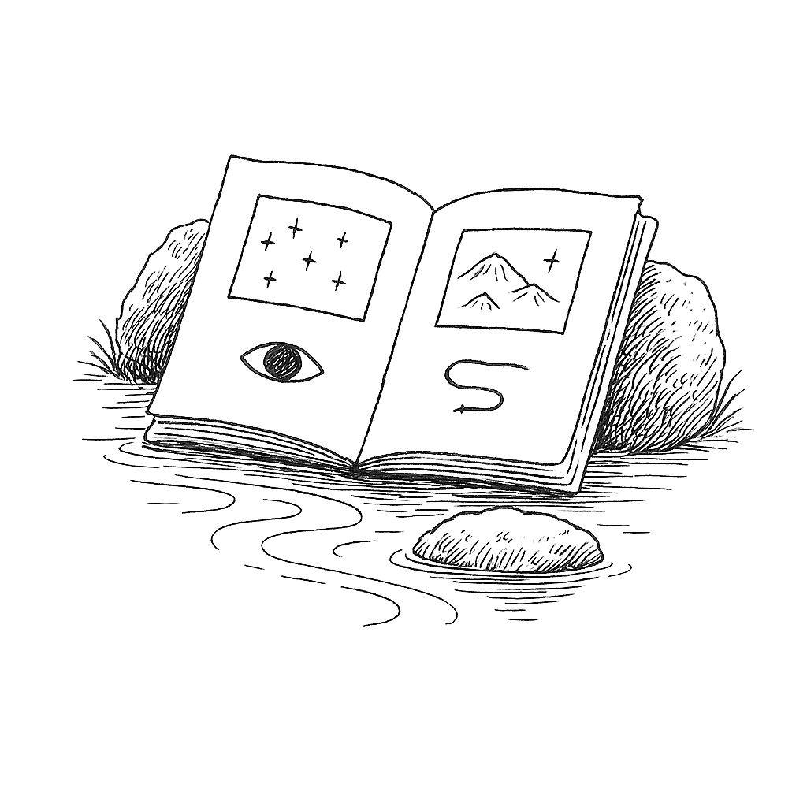

Write to Kei Kreutler at contact@innerlibrary.net for an initial call to explore booking workshops.
My work has always been related to organizational systems. The concept of organizations, though, is rapidly changing.
The theory of the firm suggested that an organization grows in proportion to its need for in-house expertise. Almost a century after its formulation, we have the ability to orchestrate "one person," multi-national corporations. This means interacting with dozens of other companies, agents, and service providers that enter and exit the boundaries of the organization all within the scope of one transaction. Simultaneously, we can imagine hundreds of thousands of people collaborating in real-time on one initiative.
Of course, this won't be without friction. The levels of economic interdependence, integration, and resilience required for such abilities to exist at all means that there will always be some figural, and some literal, bumps in the road. What matters most is how we approach these massive societal, cultural, and technological changes: how we thread a needle through them.
I've decided to start publicly offering workshops on navigating these changes.
I've developed workshops that help organizations explore how they'll evolve over time, whether they're beginning, growing, or sometimes, ending. My facilitation approach combines organizational coaching with scenario modeling methodologies, which guide organizations to imagine how they can change in relation to internal and external pressures.
These workshops result in different outputs, including governance design, renewed organizational visions, and strategies for relating to emerging technologies.
These workshops have a distinctive feature: the creation of shared "memory threads" using artificial intelligence tools. We build context through collecting references, discussions, and notes, like an interactive library of our work together. Organizations then own these memory threads that they can revisit in conversation at any time after the workshops conclude.
Workshops take place after I've gained an in-depth understanding of your specific needs. These workshops then create space for collaborative thinking about possible futures, while grounding discussions in practical governance patterns from various traditions.
Engagements can be structured as:
Workshops can be conducted remotely or in-person with follow-up sessions available.
For larger collaborations, I partner with organizations like BlockScience, Hats Protocol, and Other Internet to complement my facilitation with their specialized expertise in mathematical modeling, technical implementation, and social research. This allows us to address the challenges of your organization from multiple angles.
Book a call: Write to contact@innerlibrary.net to schedule an introductory conversation.
Request a proposal: Share your challenge, and I’ll return a scoped pathway and timeline.
Some workshops I've facilitated include:
While my personal predilection tends toward enhancing mutualist, non-coercive, and civic capabilities in organizations, I provide a largely agnostic space for you to explore the most appropriate governance design for your context. The only requirement is that it can evolve in relation to internal and external challenges, because as much as we try to tame them, organizations are wild creatures, and sometimes flourish when recognized as such.
You can read more about my background on my personal website keikreutler.net, where you'll find links to relevant writing.
I work through the design lens of protocols, aiming to shift patterns of interaction across socio-technical systems. Organizations often have shadows where stated problems obscure real ones. My coaching provides perspectives in which knots untie themselves rather than forcing solutions.
From 2017 to 2022, I led strategy and communications at Gnosis in Berlin, Germany. While there, I co-created the Zodiac tools, an open standard supporting modular software for organizations. Over $3 billion in transactions have flowed through the Zodiac tools, which are used by ENS DAO, GnosisDAO, and others. Read about them on the MIT Computational Law Review.
The theoretical inspiration for Patternship governance workshops comes from my previous work on pattern languages for organizations as well as from my work as a Core Researcher in the Ethereum Foundation's Summer of Protocols program.
Write to Kei Kreutler at contact@innerlibrary.net for an initial call to explore booking workshops.

Back home